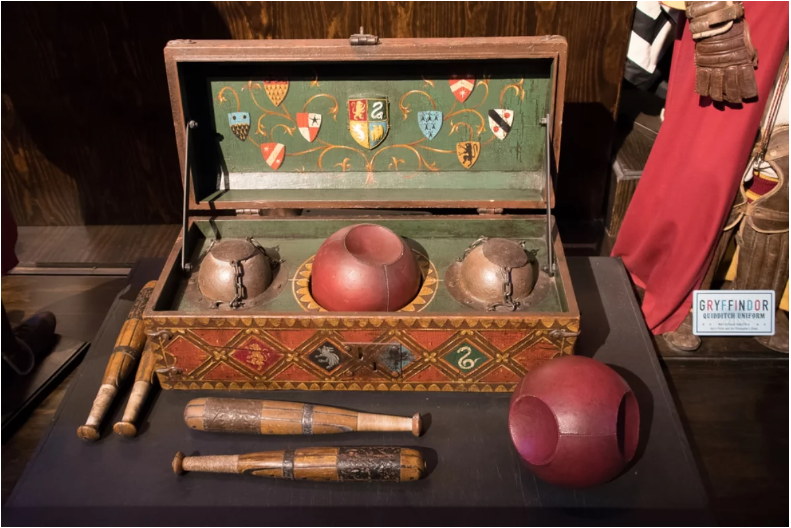
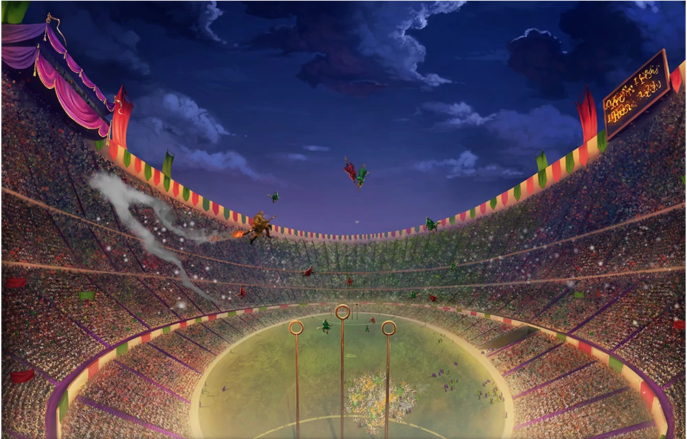
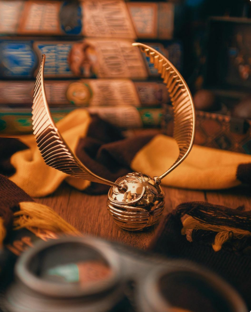

Квідич (англ. Quidditch) — вигадана спортивна гра, у яку грають персонажі книги Дж. К. Ролінґ про Гаррі Поттера.
Зміст:
Правила гри
У кожній команді з квідичу — семеро гравців. Троє з них — загоничі. Квафел — яскраво-червоний м'яч із виїмками, завбільшки, як футбольний. Загоничі кидають квафел один одному і намагаються закинути його в одне з шести кілець, що розташовані на полі. За кожний забитий квафел команда дістає десять очок. У кожній команді є воротар, який літає навколо кілець і заважає противникам забити гол квафелом. Бладжери — два однакові чорні м'ячі, трохи менші від квафела. Бладжери шугають довкола і намагаються збити гравців з їхніх мітел. Відбивачі — двоє гравців, обов'язок яких — відбивати бладжери, захищаючи гравців своєї команди. Останній член команди — ловець, що має постійно снувати між загоничами, відбивачами, бладжерами і квафелом, щоб упіймати снича (м'яч, завбільшки з великий горіх, золотавий та з невеликими срібними крильцями) швидше за ловця команди-суперника. Ловець, який зловив сніча, здобуває для команди 150 очок, чого майже завжди достатньо для перемоги. Гра не закінчиться, поки сніч не буде піймано — тому гра може тривати скільки завгодно (рекордом було три місяці).
Чемпіонат світу з квідичу
Проводиться кожні чотири роки. Фінал останнього з чемпіонатів між Ірландією та Болгарією описано в книжці «Гаррі Поттер і келих вогню»
Шкільний чемпіонат Гоґвортсу
Гаррі Поттер і в'язень Азкабану
Перший матч ґрифіндорської команди з квідичу мав відбутися із слизеринцями, проте ловець Драко Мелфой відмовився грати через біль в руці після інциденту із гіпогрифом. Тому ґрифіндорці зустрілися в матчі із гафелпавцями, у яких був новий капітан він же ловець — п'ятикласник Седрік Діґорі. Матч відбувався за жахливої погоди — сильний вітер і злива. Ґрифіндор вигравав із рахунком 50:0. Для успішного завершення матчу ловець команди Гаррі Поттер мусив піймати снича. Проте зробити це йому завадили дементори — золотого снича здобув Седрік Діґорі, чим приніс своїй команді перемогу із рахунком 150:50.
Наступного разу Ґрифіндор зустрівся в матчі із Рейвенкловом. Оригінальність цієї зустрічі полягає ще в тому, що ловець Ґрифіндору Гаррі Поттер отримав в подарунок мітлу світового класу — «Вогнеблискавка» (що також значно підняло настрій команди загалом). Майстерність Гаррі Поттера і його супершвидка мітла принесли команді Ґрифіндор перемогу в матчі і гарантоване друге місце у загальному турнірі з квідичу.
Фінал змагань із квідичу відбувся в першу суботу після великодніх канікул між командами гуртожитків Слизерин і Ґрифіндор. Слизерин посідав у турнірі перше місце з відривом у 200 очок. Тому перед ловцем Ґрифіндору Гаррі Поттером постало завдання упіймати снича з перевагою його команди в 50 очок. Матч був дуже напруженим. Адже Ґрифіндор вже 8 років не здобував кубку з квідичу, а для нинішнього складу команди це була остання можливість (капітан команди Олівер Вуд навчався у випускному класі). Гравці вели жорстоку гру — було назначено кілька пенальті. Коли гра йшла із рахунком 80:10 на користь Ґрифіндора (чотири голи забила Анжеліна Джонсон, по два — Алісія Спінет та Кеті Бел; із боку слизеринців капітан команди Флінт забив одного гола), Гаррі Поттер упіймав снича. Ґрифіндор переміг матч із рахунком 230:20 та кубок з квідичу.
Гаррі Поттер і Напівкровний Принц
Гаррі Поттера призначено новим капітаном команди Ґрифіндорського гуртожитку.
До нового складу команди увійшли:
- • загоничі— Кеті Бел, Демелза Робінс, Джіні Візлі
- • воротар — Рон Візлі
- • відбивачі — Джимі Пікс, Річі Кут
- • ловець — Гаррі Поттер
У першому матчі Ґрифіндор зустрівся із командою Слизерину, капітаном якого був Уркугарт. Лі Джордан, що був коментатором шкільних матчів, випустився зі школи, тому його обов'язки доручили Захаріасу Сміту. Ґрифіндору вдалося здобути перемогу завдяки вдалій грі Рона Візлі (Гаррі вдав, що додає до напою Рона настійку для везіння — фелікс-феліціс, щоб надати йому впевненості), Джіні Візлі та тому, що Гаррі Поттеру в останню мить вдалося випередити ловця команди суперників — Гарпера та зловити снича.
Вдруге Ґрифіндор зустрівся із Гафелпафом. Через упередженість Захаріаса Сміта, коментатором стала Луна Лавґуд. У команді Ґрифіндора відбулися вимушені зміни: Кеті Бел, що потрапила у лікарню, замінив Дін Томас, а Рона Візлі, що отруївся вином, — Маклаген. Маклаґен переймав на себе більше обов'язків, що йому були надані, для того, щоб показати свої вміння, чим значно перешкоджав іншим гравцям своєї команди. Зрештою, коли він під час матчу вихопив битку Пікса, намагаючись навчити його, як грати, Гаррі відволікся від ходу гри, роблячи зауваження Маклаґену, тому в нього влучив бладжер і він знепритомнів. У результаті, Ґрифіндор програв із рахунком 320:60.
Останній матч відбувся між Ґрифіндором та Рейвенкловом. Гаррі Поттер не міг брати участь у матчі через те, що відбував покарання у Северуса Снейпа через використання закляття Сектумсемпра проти Драко Мелфоя. Замість нього ловцем команди виступила Джіні Візлі. І таким складом команда здобула перемогу із рахунком 450:140.
